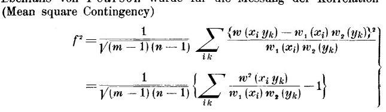

Extension of contingency
2020/3/28 
Pearson is a great mathematician and he proposed a concept called "Mean Square Contingency" in one of his treatise. This concept can describe the relationship between two random variables. Pearson's original formulation is using discrete random variables. Many years later, one paper(Gebelein-1941), which is cited by Xiangxiang Xu in his journal article published recently(2020) said this contingency method can only be used in discrete form. However, Pearson used this concept and computed the contingency for 2d normal distribution, which means it can be generalized to continuous case easily.
The original article of Gebelein said in his first part: " Sein Nachteil besteht darin, daß $f^2$ sich nur für arithmetische Verteilungen bilden läßt und daß, wie sich später zeigt, eine sinnvolle Verallgemeinerung auf Verteilungsfunktionen $w(x, y)$ überhaupt nicht möglich ist. "
This article has no references but is cited for more than 200 times since its publication. I wonder whether it is truly valuable as it gave misleading information when introducing previous work. I know you need to give some disadvantage summary for one particular previous work. But can we make up some non-existing fact?